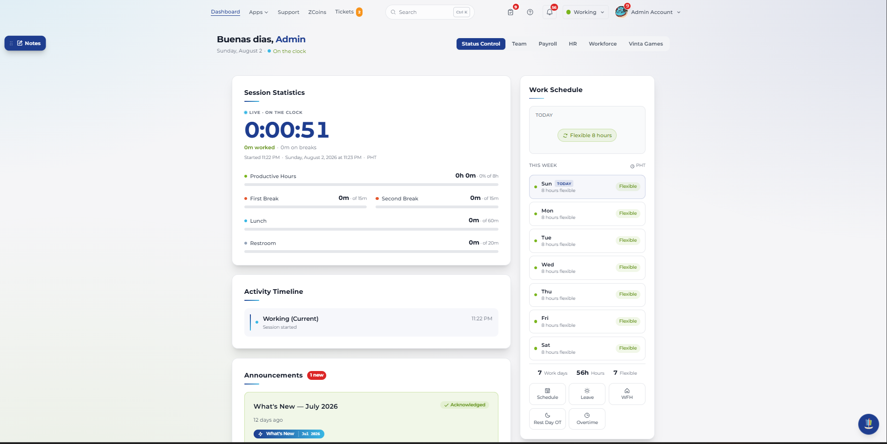
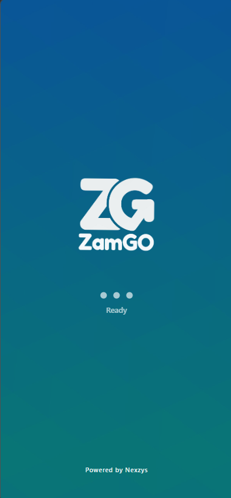
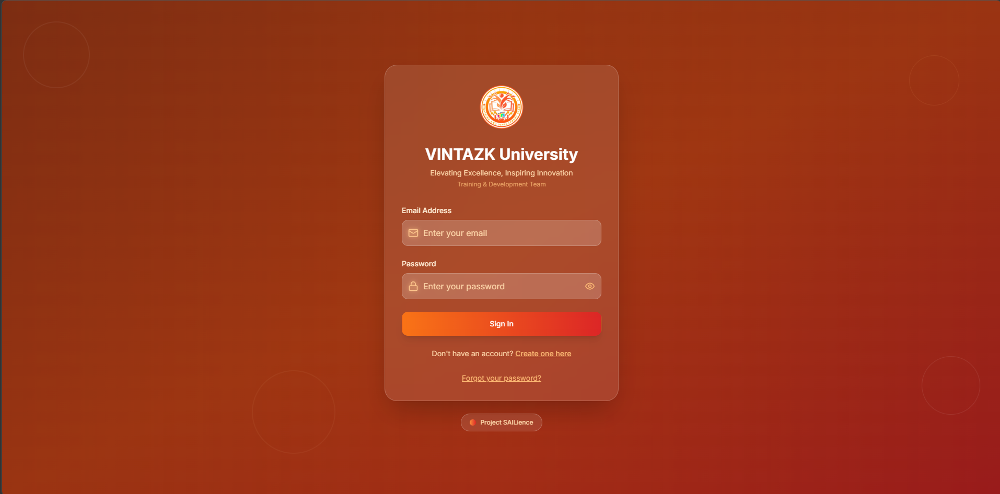

Every system I build grows from the same root — understanding what communities actually need. Walk with me.
Scroll to walk deeperComputer Science graduate. National award winner. Building software in the Philippines that solves problems no one else is looking at.
Full-stack architecture. Lean Six Sigma discipline. At the center of the forest, every path connects back to purpose.
LSSWB certified. Sprint planning, feature scoping, intern supervision — every system ships with structure, not just code.
An outsourcing platform that won the 2025 Productivity Olympics. A business directory indexing 636+ establishments in Zamboanga City. Two lanterns, one mission.
Vintazk University — a full LMS. Barangay Connect — civic tech with face detection. SmartScore — AI-powered exam grading. Each one built for real people.
React, Supabase, Python, Flutter — each one a firefly in the dark. Small on their own. Together, they illuminate everything.
2025 Productivity Olympics, 10th Edition — Service Micro Category. Recognized by DOLE and RTWPB. Proof that what grows in this forest has real impact.
Executive Education at AIM. Digital Transformation, Business Strategy. The view from up here shows how far the forest stretches — and how much more there is to plant.
The forest is still growing. Your project could be the next lantern.
LSSWB — Lean Six Sigma White Belt
Results-driven Senior Software Developer building civic tech platforms, SaaS systems, and business directory solutions. National award winner as part of the VINTAZK Outsourcing core team.
Building impactful software solutions across multiple domains
Building end-to-end web and mobile applications using React, Flutter, Django, and Supabase with modern architecture patterns.
Designing platforms that serve communities, from barangay management systems to city-wide business directories.
Leading development teams, managing OJT interns, scoping features, and running sprint-based delivery across concurrent projects.
Applying Lean Six Sigma principles and digital transformation strategies to streamline workflows and optimize delivery.
Technologies and tools I work with daily
Six Sigma PH · Issued Oct 2025 · ID: MEM-8T-BE8w7-u5Oz
2025 Productivity Olympics (10th Edition) · DOLE & RTWPB · Sep 2025
Solutions built for real-world impact

Core contributor to the outsourcing solutions platform that earned the National Winner title at the 2025 Productivity Olympics.
Live Site
Built and maintained a directory of 636+ Zamboanga City businesses with analytics dashboard and Excel reporting.
Live Site
Full-featured LMS supporting course management, learner tracking, content delivery, and role-based access control.
Live SiteFour-component civic digital system: mobile app, web admin, kiosk terminal, and Supabase backend with face detection.
AI-powered scoring and evaluation platform with automated grading, analytics, and performance tracking.
Open to freelance, full-time, and collaboration opportunities